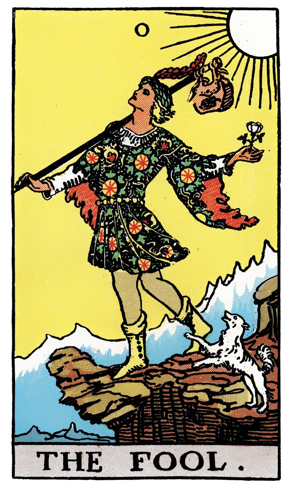

ASTRO
Mapa Natal
Revolução Solar
Trânsitos Diários
Astro Tarot
Limpar cache
ASTRO TAROT — DIÁRIO & SÍNTESE INICIÁTICA
Registro Físico, Hermetismo, Cabala, Psicologia Analítica (Jung) & Firebase Cloud
🔮 Tiragem de Cartas
📖 Estudo Individual da Carta
1. Questão Principal
Qual é a Questão / Pergunta Principal?
0
Profundidade da Interpretação
Breve
Padrão
Aprofundada
2. Quantidade & Tiragem Físico-Virtual
Quantidade de Cartas Tiradas na Mesa (1 a 12):
1
3
5
7
10 (Cruz Celta)
12 (Astrológica)
🎲 Sortear cartas aleatoriamente
3. Definição e Busca das Cartas Físicas
toque na imagem para escolher visualmente
✨ SINTETIZAR LEITURA INICIÁTICA
Mesa Virtual da Tiragem
✨ Interpretação Iniciática & Alquímica
🤖 Nova Interpretação
📋 Copiar
📄 Exportar TXT
📢 Voz PT-BR / Bilíngue:
Velocidade
▶ Ouvir
⏸ Pausar
⏹ Parar
Defina sua questão, selecione as cartas tiradas do seu baralho físico e clique no botão acima para sintetizar a leitura.
💾 Guardar esta Leitura no Histórico
💬 Diálogo de Aprofundamento com a IA
Enviar
📜 Histórico de Leituras Salvas (Firebase Cloud)
🔄 Atualizar
☑️ Selecionar todas
📑 Exportar PDF (0 selecionadas)
A exportação em PDF está disponível apenas para leituras já salvas no histórico. Marque a caixa em cada leitura para incluí-la.
📖 Escolha a Carta para Estudo
📖 Gerar Introdução ao Baralho

🔍 escolher
Nenhuma carta selecionada ainda.
💾 Guardar este Estudo no Histórico
📜 Histórico de Estudos Salvos (Firebase Cloud)
🔄 Atualizar
☑️ Selecionar todas
📑 Incluir índice
📑 Exportar PDF (0 selecionadas)
A exportação em PDF está disponível apenas para estudos já salvos no histórico. Marque a caixa em cada estudo para incluí-lo.
Nenhum estudo carregado ainda.
✨ Estudo Iniciático da Carta
Selecione uma carta e gere cada tópico individualmente. Depois de gerado, você pode pedir um aprofundamento complementar sobre o mesmo tópico.
📚 Gerar os 15 tópicos em sequência
⏹ Parar
✨
Escolher carta
✕